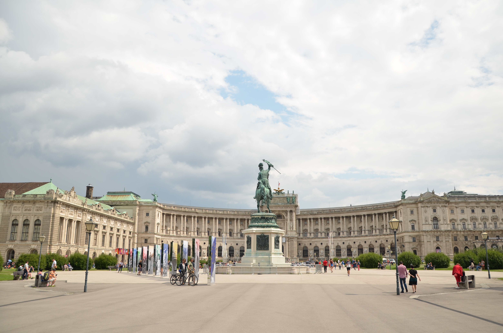

A la decouverte de Vienne, Autriche
Capitale des Habsbourg pendant 7 siècles, puis de la république d’Autriche depuis 1918, Vienne est LA ville historique par essence, profondément marquée par son rôle éminent au fil des siècles. Profondément meurtrie par les sièges, les guerres napoléoniennes, les bombardements et les occupations, Vienne se releva à chaque fois. Cette volonté de maintenir son rang fascine les visiteurs du monde entier. Et toutes générations confondues, c’est de ce riche et long passé qu’on vient s’imprégner. Le charme de Vienne, c’est aussi cet étonnant télescopage entre tradition et modernité. L’atmosphère romantique, parfois désuète, cohabite avec la créativité audacieuse. L’architecture pompeuse du Ring est contrebalancée par celle des cités ouvrières de la « Vienne rouge » conçues par des architectes fatigués de supporter les dorures de la Vienne impériale. Le talent de Vienne, c’est de faire aimer les coulisses de tous ces décors de façade. Duelle, contradictoire, fascinante et si fertile en courants de pensée et mouvements artistiques innovateurs, Vienne échappe aux définitions. La beauté paisible du Belvédère n’est qu’un emballage pour les figures torturées d’Egon Schiele et les allégories de Gustav Klimt. Aux flonflons du Prater, aux valses de Strauss, répondent aujourd’hui les décibels des clubs underground. Avec un art de vivre intelligent, des espaces verts et d’authentiques bouts de campagne, ce n’est pas par hasard si, depuis quelques années, Vienne caracole en tête du classement mondial des villes distinguées pour leur qualité de vie !© Routard
